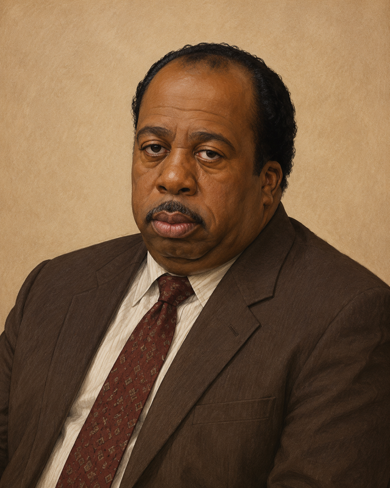

Administración
Michael Scott
Gerente regional
Jefe de la sucursal de Scranton. Considera que sus empleados son su familia y que él es el mejor jefe del mundo.
“That's what she said.”
Sucursal Scranton
Conocé a las personas responsables del funcionamiento, y ocasionalmente del caos, de Dunder Mifflin Scranton.
Directorio corporativo
8 empleados registrados
Gerente regional
Jefe de la sucursal de Scranton. Considera que sus empleados son su familia y que él es el mejor jefe del mundo.
“That's what she said.”
Asistente del gerente regional
Vendedor, agricultor de remolachas y experto autoproclamado en seguridad, supervivencia y artes marciales.
“Bears. Beets. Battlestar Galactica.”
Representante de ventas
Uno de los mejores vendedores de la sucursal, reconocido especialmente por sus bromas constantes hacia Dwight.
“Bears do not eat beets.”
Recepcionista
Recepcionista y artista de la oficina. Suele ser cómplice de Jim y una de las pocas personas capaces de controlar a Michael.
“There's a lot of beauty in ordinary things.”
Contador
Contador de pocas palabras, baterista y experto cocinero de chili, aunque transportarlo hasta la oficina puede resultar complicado.
“Why waste time say lot word?”
Jefa de contabilidad
Estricta, organizada y amante de los gatos. Supervisa las cuentas y juzga silenciosamente casi todo lo que ocurre en la oficina.
“I don't have a headache. I'm just preparing.”

Representante de ventas
Vendedor experimentado que espera pacientemente el final de cada reunión y, principalmente, el día de su jubilación.
“Did I stutter?”
Representante de Recursos Humanos
Responsable de Recursos Humanos y principal obstáculo para las ideas de Michael, según Michael.
“HR is a joke. I can't do anything about anything.”
Programa de reconocimiento
Nuestro avanzado sistema analiza rendimiento, puntualidad, compañerismo y cercanía personal con el gerente regional.
Sistema desarrollado y auditado por Michael Scott.